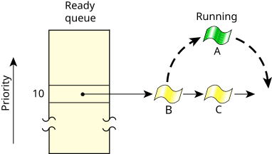

In round-robin scheduling, a thread selected to run continues executing until it:
A timeslice is the unit of time assigned to every thread. Once it consumes its timeslice, a thread is preempted and the next READY thread at the same priority level is given the processor. A timeslice is 4 × the clock period. (For more information, see the entry for ClockPeriod() in the C Library Reference.)
As the following diagram shows, Thread A ran until it consumed its timeslice; the next READY thread (Thread B) now runs:
